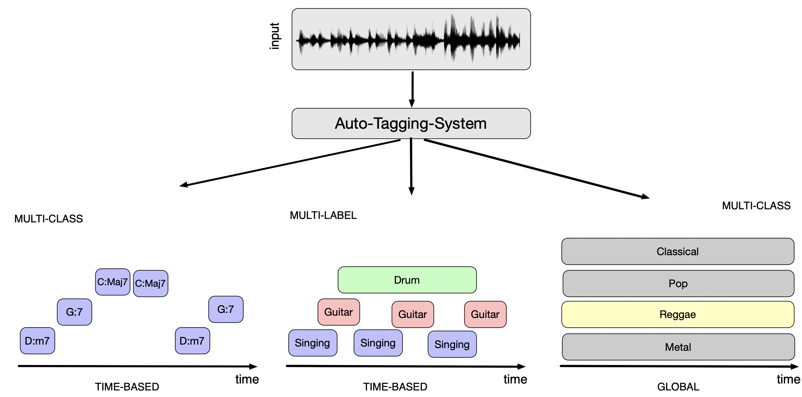
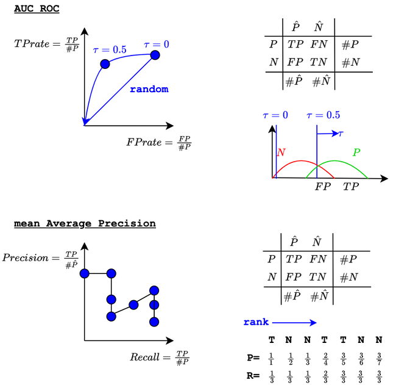
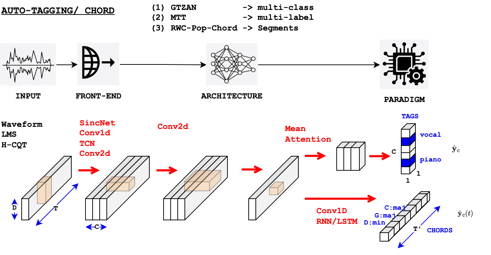

Auto-Tagging (front-ends)#
Goal of Auto-Tagging ?#
Music auto-tagging is the task of assigning tags (such as genre, style, moods, instrumentation, chords) to a music track.
Tags can be
mutually exclusive (multi-class) |
non-mutually exclusive (multi-label) |
|
|---|---|---|
Global in time |
Music-genre |
User-tags |
Time-based |
Chord-segments |
Instrument-segments |

A very short history of Auto-Tagging#
The task has a long history in MIR.
As soon as 2002 Tzanetakis et al. [TC02] demonstrated that it is possible to estimate the
genreusing a set of low-level (hand-crafted) audio features (such as MFCC) and simple machine-learning models (such as Gaussian-Mixture-Models).Over years, the considered audio features improved [Pee04], including block-features [Sey10] or speech-inspired features (Universal-Background-Models and Super-Vector [CTP11]), as well as the machine-learning models (moving to Random forest or Support-Vector-Machine).
It also quickly appeared that the same feature/ML system could be trained to solve many tasks of tagging or segmentation (genre, mood, speech/music) [Pee07], [BP09].
Deep learning era.
We start the story with Dieleman [Die14] who proposes to use a Conv2d applied to a Log-Mel-Spectrogram with kernel extending over the whole frequency range, therefore performing only convolution over time.
The rational for this, is that, as opposed to natural images, sources in a T/F representation are not invariant by translation over frequencies and the adjacent frequencies are not necesseraly correlated (spacing between harmonics).Despite this, Choi et al. [CFS16] proposed (with success) to apply Computer Vision VGG-like architecture to a time-frequency representation.
Later on, Pons et al. [PLS16] proposed to design kernel shapes using musical consideration (with kernel extending over frequencies to represent timbre, over time to represent rhythm).
In order to avoid having to choose the kernel shape and STFT parameters, it is been proposed to use directly the audio waveform as input, the “End-to-End” systems of Dieleman et al. [DS14] or Lee et al. [LPKN17].
The task of auto-tagging has also close relationship with their equivalent task in Speech.
We will develop here a model developed initially for speaker recognition by Ravanelli et al. [RB18].
The task is still very active today. For example
in the supervised case,
in the Self-Supervised-Learning case
with the so-called foundation models such as MERT [LYZ+24] (see second part of this tutorial).
Fore more details, see the very good tutorial “musical classification”.
A very short history of Chord Estimation.#
Chord estimation can be considered as a specific tagging application: it involves applying mutually exclusive labels (of chords) over segments of time.
However, it has (at least) two specificities:
chord transition follow musical rules which can be represented by a language model.
some chord are equivalent, their spelling depends on the choice of the level of detail, and their choice on the
Therefore, ASR (Automatic Speech Recognition) inspired techniques has been developed at first [SE03] or [PP07] with
an acoustic model representing \(p(\text{chord}|\text{chroma})\) and
a language model, often a Hidden Markov Model, representing \(p(\text{chord}_{t}|\text{chord}_{t-1}).\)
Deep learning era. In the case of chord estimation, deep learning is also now commonly used. One seminal paper for this is McFee at al. [MB17]
the model is a RCNN (a ConvNet followed by a bi-directional RNN, here GRU)
the model is trained to use an inner representation which relates to the
root,bassandpitches(the CREMA)this allows learning representation which brings together close (but different) chords
We will develop here a similar model based on the combination of Conv2d and Bi-LSTM but without the multi-task approach.
How is the task evaluated ?#
We consider a set of classes \(c \in \{1,\ldots,C\}\).
Multi-class#
In a multi-class problem, the classes are mutually exclusive.
The outputs of the (neural network) model \(o_c\) therefore go to a softmax function.
The outputs of the softmax, \(p_c\), then represent the probability \(P(Y=c|X)\).
The predicted class is then chosen as \(\arg\max_c p_c\).
We evaluate the performances by computing the standard
Accuracy, Recall, Precision, F-measure for each class \(c\) and then take the average over classes \(c\).
from sklearn.metrics import classification_report, confusion_matrix
classification_reports = classification_report(labels_idx,
labels_pred_idx,
output_dict=True)
cm = confusion_matrix(labels_idx, labels_pred_idx)
Multi-label#
In the multi-label problem, the classes are NOT mutually exclusive.
Each \(o_c\) therefore goes individually to a sigmoid function (multi-label is processed as a set of parallel independent binary classification problems).
The outputs of the sigmoids \(p_c\) then represent \(P(Y_c=1|X)\).
We then need to set a threshold \(\tau\) on each \(p_c\) to decide wether class \(c\) exist or not.
Using a default threshold (\(\tau=0.5\)) of course allows to use the afore-mentioned metrics (Accuracy, Recall, Precision, F-measure).
However, in practice, we want to measure the performances independently of the choice of a given threshold.
This can be using either
the AUC (Area Under the Curve) of the ROC. The ROC curve represents the values of TPrate versus FPrate for all possible choices of a threshold \(\tau\). The larger the AUC-ROC is (maximum of 1) the more discrimination is between the Positive and Negative classes. A value of 0.5 indicates no discrimination (random system).
the mean-Average-Precision (mAP). The mAP measures the AUC of the Precision versus Recall curve for all possible choices of a threshold \(\tau)\).
The AUC-ROC is known to be sensitive to class imbalancing (in case of multi-label, negative examples are usually more numerous than positive ones, hence the FPrate is artificially low leading to good AUC of ROC). In the opposite, mAP which relies on the Precision is less sensitive to class imbalancing and is therefoe prefered.

from sklearn.metrics import roc_auc_score, average_precision_score
roc_auc_score(labels_idx, labels_pred_prob, average="macro")
average_precision_score(labels_idx, labels_pred_prob, average="macro")
About the averages in scikit-learn:
macroaverage: computes the metric independently for each class and then takes the average (i.e., all classes are treated equally, regardless of their frequency).microaverage: aggregates the contributions of all classes before calculating the overall metric, essentially treating the problem as a single binary classification task across all samples
Chord Estimation#
In the following (for the sake of simplicity) we will evaluate our chord estimation system as a multi-class problem.
However, chord are not simple labels.
Indeed, chord annotation is partly subjective, some chords are equivalent, and the spelling of a chord depends on the choice of the level of detail (the choice of a dictionary).
For this reason, mir_eval [RMH+14] or Pauwels et al. [PP13] proposed metrics that allows measuring the correctness of the root, the major/minor component, the bass or the constitution in terms of chroma.
Some popular datasets#
A (close to) exhaustive list of MIR datasets is available in the ismir.net web site.
We have chosen the following ones since they are often used, they represent the multi-class, multi-label and chord estimation problems, and their audio is easely accessible.
GTZAN#
GTZAN contains 1000 audio files of 30s duration, each with a single (multi-class) genre label
among 10 classes: ‘blues’,’classical’,’country’,’disco’,’hiphop’,’jazz’,’metal’,’pop’, ‘reggae’,’rock’
Note that GTZAN has been criticized for the quality of its genre label [Stu13]; so results should be considered with cares.
"entry": [
{
"filepath": [
{"value": "blues+++blues.00000.wav"}
],
"genre": [
{"value": "blues"}
]
},
{
"filepath": [
{"value": "blues+++blues.00001.wav"}
],
"genre": [
{"value": "blues"}
]
}
]
Magna-Tag-A-Tune#
Magna-Tag-A-Tune (MTT) is a multi-label large-scale dataset of 25,000 30-second music clips from various genres, each annotated with
multiple tags describing genre, mood, instrumentation, and other musical attributes such as (‘guitar’, ‘classical’, ‘slow’, ‘techno’, ‘strings’, ‘drums’, ‘electronic’, ‘rock’, ‘fast’, ‘piano’, …)
We only use a subset of this dataset by only selecting the most 50 used tags and further reducing the number of audio by 20.
"entry": [
{
"filepath": [
{"value": "0+++american_bach_soloists-j_s__bach__cantatas_volume_v-01-gleichwie_der_regen_und_schnee_vom_himmel_fallt_bwv_18_i_sinfonia-117-146.mp3"}
],
"tag": [
{"value": "classical"},
{"value": "violin"}
],
"artist": [
{"value": "American Bach Soloists"}
],
"album": [
{"value": "J.S. Bach - Cantatas Volume V"}
],
"track_number": [
{"value": 1}
],
"title": [
{"value": "Gleichwie der Regen und Schnee vom Himmel fallt BWV 18_ I Sinfonia"}
],
"clip_id": [
{"value": 29}
],
"original_url": [
{"value": "http://he3.magnatune.com/all/01--Gleichwie%20der%20Regen%20und%20Schnee%20vom%20Himmel%20fallt%20BWV%2018_%20I%20Sinfonia--ABS.mp3"}
],
"segmentEnd": [
{"value": 146}
],
"segmentStart": [
{"value": 117}
]
},
]
RWC-Popular-Chord (AIST-Annotations)#
RWC-Popular-Chord (AIST-Annotations)[GHNO02], [Got06] is one of the earliest and remains one of the most comprehensive datasets, featuring annotations for genre, structure, beat, chords, and multiple pitches. We use the subset of tracks named Popular-Music-Dataset.
This dataset has been made available online with Masataka Goto’s permission specifically for this tutorial. For any other use, please contact Masataka Goto to obtain authorization.
"entry": [
{
"filepath": [
{"value": "001"}
],
"chord": [
{"value": "N:-", "time": 0.0, "duration": 0.104},
{"value": "G#:min", "time": 0.104, "duration": 1.754},
{"value": "F#:maj", "time": 1.858,"duration": 1.7879999999999998},
{"value": "E:maj","time": 3.646,"duration": 1.7409999999999997},
{"value": "F#:maj", "time": 5.387, "duration": 3.6800000000000006},
]
}
]
How we can solve it using deep learning#
Our goal is to show that we can solve the three tasks (multi-class GTZAN, multi-label MTT and chord estimation RWC-Pop) with a single code.
Depending on the task, we of course adapt the model (defined in the .yaml files).
multi-class/multi-label:
GTZAN and RWC-Pop-Chord are multi-class problems \(\Rightarrow\) softmax and categorial-CE
MTT is multi-label \(\Rightarrow\) sigmoids and BCEs
global/local:
GTZAN and MTT have global annotations \(\Rightarrow\) we reduce the time axis using AutoPoolWeightSplit
RWC-Pop-Chord have local annotations with a language model \(\Rightarrow\) we use a bi-LSTM.
For GTZAN and MTT our core model is the SincNet model illustrated below.

Figure. SincNet model. image source: SincNet [RB18]
We will vary in turn
the inputs: waveform, Log-Mel-Spectrogram or CQT
the front-end:
the model blocks:
Conv-1d, Linear and AutoPoolWeightSplit for multi-class, multi-label

Experiments:#
The code is available here:
(Main notebook)(geoffroypeeters/deeplearning-101-audiomir_notebook)
(Config Auto-Tagging)[geoffroypeeters/deeplearning-101-audiomir_notebook]
(Config Chord)[geoffroypeeters/deeplearning-101-audiomir_notebook]
Dataset |
Input |
Frontend |
Model |
Results |
Code |
|---|---|---|---|---|---|
GTZAN |
LMS |
Conv2d(128,5) |
Conv1d/Linear/AutoPoolWeightSplit |
macroRecall: 0.56 |
|
GTZAN |
Waveform |
SincNet/Abs |
Conv1d/Linear/AutoPoolWeightSplit |
macroRecall: 0.56 |
|
GTZAN |
Waveform |
Conv1D |
Conv1d/Linear/AutoPoolWeightSplit |
macroRecall: 0.54 |
|
GTZAN |
Waveform |
TCN |
Conv1d/Linear/AutoPoolWeightSplit |
macroRecall: 0.46 |
|
MTT |
LMS |
Conv2d(128,5) |
Conv1d/Linear/AutoPoolWeightSplit |
AUC: 0.81, avgPrec: 0.29 |
|
RWC-Pop-Chord |
CQT |
Conv2D(1,5)(5,1)* |
Conv1D/LSTM/Linear |
macroRecall: 0.54 |
Actions:#
We show that
autotagging config file
multi-class: results, CM and Tag-O-Gram
multi-class:: learned filters SincNet, code SincNet
multi-class: learned filters Conv1d
multi-label: results, tag-o-gram:
chord config file
chord: training patches
chord: resutls, tag-o-gram